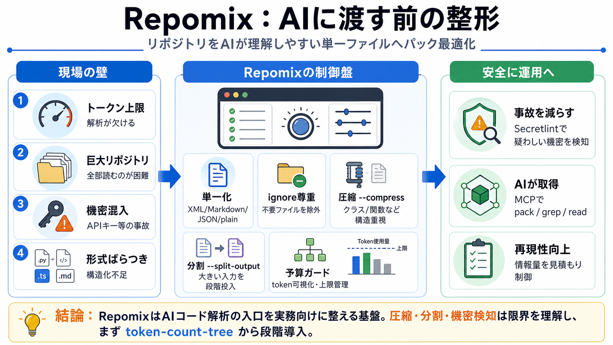

Output Formats | Repomix
# List all file paths # List all file pathscat repomix-output.json | jq -r '.files | keys[]' cat repomix-output.json | …

# List all file paths # List all file pathscat repomix-output.json | jq -r '.files | keys[]' cat repomix-output.json | …
## Repomix Output Options | Option | Description | --- | | `-o, --output` | Output file path (default: `repomix-outp…
Then I saw this article and realized that Claude could understand even when everything was in a single file, which led m…
#### Repomix Output Options | Option | Description | --- | | `-o, --output` | Output file path (default: `repomix-outp…
When working with large codebases, the packed output may exceed file size limits imposed by some AI tools (e.g., Google …